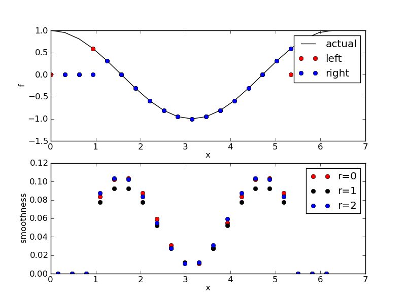

Examples¶
The following are a few selected examples from the examples directory of PyWENO.
Reconstructing with OpenCL¶
In this example we use the CLWENO5PM class to reconstruct a discontinuous function on a uniform grid using OpenCL.
"""PyWENO discontinuous reconstruction example using OpenCL."""
# XXX: this doesn't work right now...
raise NotImplementedError
import math
import numpy
import pyweno.grid
import pyweno.clweno
# explicitly define the function f that we will reconstruct ...
def f(x):
if x < 0.0:
return math.sin(x)
return math.cos(x)
uf = numpy.frompyfunc(f, 1, 1)
# load the weno reconstructor from the cache
x = numpy.linspace(-5.0, 5.0, 21)
grid = pyweno.grid.Grid(x)
weno = pyweno.clweno.CLPMWENO(3)
# average f
fb = grid.average(f)
# allocate arrays for reconstruction
fm = numpy.zeros(grid.N)
fp = numpy.zeros(grid.N)
# reconstruct!
weno.reconstruct(fb, fp, fm)
print fp
print fm
# plot results
import matplotlib
matplotlib.use('Agg')
import matplotlib.pyplot as plt
x = numpy.linspace(-5.0, 5.0, 1001);
uf = numpy.frompyfunc(f, 1, 1)
plt.plot(x, uf(x), '-k')
plt.plot(grid.x[:-1], fp, 'or')
plt.plot(grid.x[:-1], fm, 'ob')
plt.title('PyWENO (CL5) reconstruction')
plt.ylabel('f')
plt.xlabel('x')
plt.legend(['actual', 'plus', 'minus'])
# draw grid boundaries
for i in range(grid.N+1):
plt.plot([grid.x[i], grid.x[i]], [-0.1, 0.1], color='0.5')
plt.savefig('clweno5.png', format='png')
The resulting plot is:

Reconstructing a discontinous function on a uniform grid¶
In this example we reconstruct a discontinuous function on a uniform grid and plot the result.
The resulting plot is:

Pre-computing and caching¶
In this example we pre-compute all the reconstruction coefficients, optimal weights, and smoothness indicator ceofficients for a non-uniform grid and cache everything.
Reconstructing a smooth function¶
In this example we reconstruct a polynomial on a non-uniform grid and plot the result.
"""PyWENO smooth reconstruction example."""
import numpy as np
import scikits.weno
import matplotlib
matplotlib.use('Agg')
import matplotlib.pyplot as plt
f = np.cos
F = np.sin
x = np.linspace(0.0, 2*np.pi, 21)
a = (F(x[1:]) - F(x[:-1]))/(x[1]-x[0])
l, s = scikits.weno.reconstruct(a, 5, 'left', return_smoothness=True)
r = scikits.weno.reconstruct(a, 5, 'right')
plt.title('scikits.weno reconstruction and smoothness indicators')
plt.subplot(2,1,1)
plt.plot(x, f(x), '-k')
plt.plot(x[:-1], l, 'or')
plt.plot(x[1:], r, 'ob')
plt.ylabel('f')
plt.xlabel('x')
plt.legend(['actual', 'left', 'right'])
plt.subplot(2,1,2)
c = 0.5*(x[1:] + x[:-1])
plt.plot(c, s[:,0], 'or')
plt.plot(c, s[:,1], 'ok')
plt.plot(c, s[:,2], 'ob')
plt.ylabel('smoothness')
plt.xlabel('x')
plt.legend(['r=0', 'r=1', 'r=2'])
plt.savefig('smooth.png', format='png')
The resulting plot is:
Reconstructing a discontinuous function¶
In this example we reconstruct a discontinuous function on a non-uniform grid and plot the result.
"""PyWENO smooth reconstruction example."""
import numpy as np
import scikits.weno
import matplotlib
matplotlib.use('Agg')
import matplotlib.pyplot as plt
def f(x):
r = np.zeros(x.shape)
i = x > 0
r[i] = np.cos(x[i])
i = x <= 0
r[i] = np.sin(x[i])
return r
def F(x):
r = np.zeros(x.shape)
i = x > 0
r[i] = np.sin(x[i])
i = x <= 0
r[i] = -np.cos(x[i])
return r
x = np.linspace(-2*np.pi, 2*np.pi, 41)
a = (F(x[1:]) - F(x[:-1]))/(x[1]-x[0])
a[20:21] = (F(x[21:22]) - 0.0)/(x[1]-x[0]) # fix middle cell average
l, s = scikits.weno.reconstruct(a, 5, 'left', return_smoothness=True)
r = scikits.weno.reconstruct(a, 5, 'right')
plt.title('scikits.weno reconstruction and smoothness indicators')
plt.subplot(2,1,1)
x2 = np.linspace(x[0], x[-1], 1001)
plt.plot(x2, f(x2), '-k')
plt.plot(x[:-1], l, 'or')
plt.plot(x[1:], r, 'ob')
plt.ylabel('f')
plt.xlabel('x')
plt.legend(['actual', 'left', 'right'])
plt.subplot(2,1,2)
c = 0.5*(x[1:] + x[:-1])
plt.plot(c, s[:,0], 'or')
plt.plot(c, s[:,1], 'ok')
plt.plot(c, s[:,2], 'ob')
plt.ylabel('smoothness')
plt.xlabel('x')
plt.legend(['r=0', 'r=1', 'r=2'])
plt.savefig('discontinuous.png', format='png')
The resulting plot is: